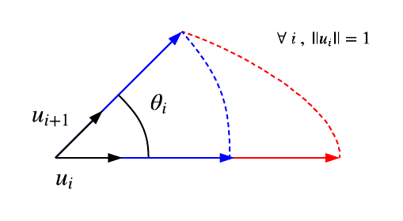
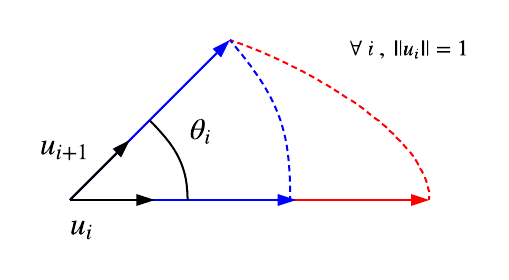

3D rotations are very powerful and computationally efficient. They allow to generate
custom rotation matrix and to rotate vectors around any arbitrary axis around any circular-like shape.
In the last line, he methods cos and sin are called the rotation functions of the rotation.
By default theses are let to Math.cos and Math.sin the resulting rotation will be a circular.
Non-circular rotation
To understand how works non-circular rotations lets start with an example.
A regular use case is the generation of an elliptic rotation matrix.
ie. a matrix that performs a rotation of a unit vector on a ellipse.

The circular rotation is represented in blue and the elliptic in red.
Note In the schema above, rotation matrices are defined such that they transform unit vectors into vectors on
vectors of the circle or the ellipse.
Pass the method (x) => a * Math.cos(x) and (y) => b * Math.sin(y) as rotation functions, the result will
be a rotation matrix around an ellipse of semi-axis major max(a,b) and semi-axis minor min(a, b).
Example
let a = 2, b = 1; // a is semi-axis major, b is semi-axis minor// +pi/2 rotation around ellipse of axis u
m.rot(u, Math.PI / 2, (x) => a * Math.cos(x), (y) => b * Math.sin(y));
Note By default the rotations function are set to Math.cos and Math.sin.
It simply performs rotation of a vector or set a matrix to a rotation matrix.
Brief
Object3 interface standardizes components accessors and rotations between objects of 3D space.
Getting Started
Components accessors
The interface provides
x,yandzaccessors such that if the object is of dimensionN,xis of dimensionN/3.Example
m.x // Vector3 u.z // number m.xyz // [Vector3, Vector3, Vector3] u.xyz // [number, number, number]Rotations
3D rotations are very powerful and computationally efficient. They allow to generate custom rotation matrix and to rotate vectors around any arbitrary axis around any circular-like shape.
Example
In the last line, he methods
cosandsinare called the rotation functions of the rotation. By default theses are let toMath.cosandMath.sinthe resulting rotation will be a circular.Non-circular rotation
To understand how works non-circular rotations lets start with an example. A regular use case is the generation of an elliptic rotation matrix. ie. a matrix that performs a rotation of a unit vector on a ellipse.

The circular rotation is represented in blue and the elliptic in red.
Note In the schema above, rotation matrices are defined such that they transform unit vectors into vectors on vectors of the circle or the ellipse.
Pass the method
(x) => a * Math.cos(x)and(y) => b * Math.sin(y)as rotation functions, the result will be a rotation matrix around an ellipse of semi-axis majormax(a,b)and semi-axis minormin(a, b).Example
let a = 2, b = 1; // a is semi-axis major, b is semi-axis minor // +pi/2 rotation around ellipse of axis u m.rot(u, Math.PI / 2, (x) => a * Math.cos(x), (y) => b * Math.sin(y));Note By default the rotations function are set to
Math.cosandMath.sin. It simply performs rotation of a vector or set a matrix to a rotation matrix.